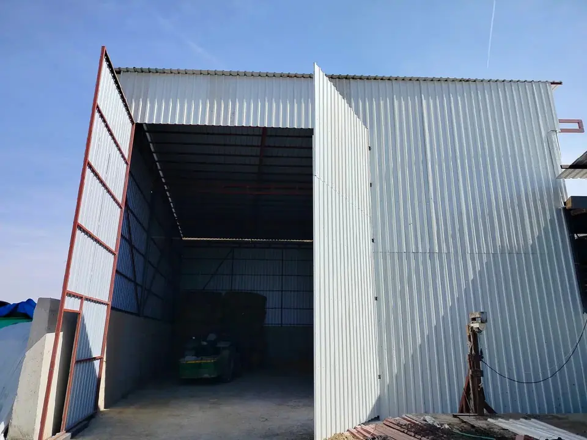

Garaj ve Otopark Sistemleri nedir?
Çelik otopark sundurmaları ve garajlar, araçları güneş, yağmur ve doludan korumak için kurulur. Tek araçlık müstakil ev çözümlerinden site ve iş yerleri için çok araçlı otopark sundurmalarına kadar farklı ölçeklerde uygulanabilir.
Planlamada araç sayısı, manevra alanı, kolonların yeri ve yağmur suyunun tahliyesi birlikte değerlendirilir. Konsol (tek taraflı kolonlu) sistemler araç giriş-çıkışını kolaylaştırır.

Hizmet detayları
- Tek ve çok araçlık otopark sundurmaları
- Konsol tip araç gölgelikleri
- Sac kaplı kapalı garajlar
- Kapılı garaj ve depo kombinasyonları
- Trapez sac, panel veya polikarbonat örtü
Uygulama alanları
- Müstakil ev ve villalar
- Site ve apartman otoparkları
- İş yeri ve personel otoparkları
- Tarım ve iş makinesi park alanları
Kullanım senaryoları
Bahçeli evlerde bir veya iki araçlık çelik otopark sundurması, bahçe kapısıyla aynı tasarım dilinde planlanarak giriş bütünlüklü hâle getirilebilir.
İş yerlerinde personel ve servis araçları için çok araçlı otopark sundurmaları, saha düzenine göre konsol veya çift kolonlu sistemlerle kurulur.
Sahil bölgelerindeki yazlık sitelerde araç gölgelikleri, yaz güneşinden korunma için sık talep edilir; rüzgâr ve tuzlu hava dikkate alınarak detaylandırılmalıdır.
Malzeme ve üretim süreci
- Kutu profil ve I profil taşıyıcılar
- Trapez sac veya sandviç panel örtü
- Ankraj plakası ve beton temel detayları
- Astar ve son kat boya
Avantajları
- Aracı güneş ve doludan koruma
- Ölçüye göre tek veya çok araçlık tasarım
- Konsol sistemle kolay manevra
- Kapalı garaja dönüştürülebilir yapı
İlgili çalışmalar



Sık sorulan sorular
Otopark sundurması için kaç kolon gerekir?
Açıklık, araç sayısı ve örtü tipine göre değişir. Konsol sistemlerde kolonlar tek tarafta toplanarak manevra alanı açık bırakılabilir.
Site otoparkına sundurma yapılabilir mi?
Site ortak alanlarında yapılacak uygulamalar için yönetim ve kat malikleri kararı, gerektiğinde belediye izni gerekir. Karar alındıktan sonra keşif ve projelendirme yapılır.
Dolu için hangi örtü daha dayanıklı?
Sac ve sandviç panel örtüler doluya karşı polikarbonata göre genellikle daha dayanıklıdır. Seçim ışık ihtiyacı ve bütçeyle birlikte değerlendirilir.
İlçelere göre garaj ve otopark sistemleri
Bölgenize özel uygulama senaryoları ve sık sorulan sorular için ilçenizi seçin: